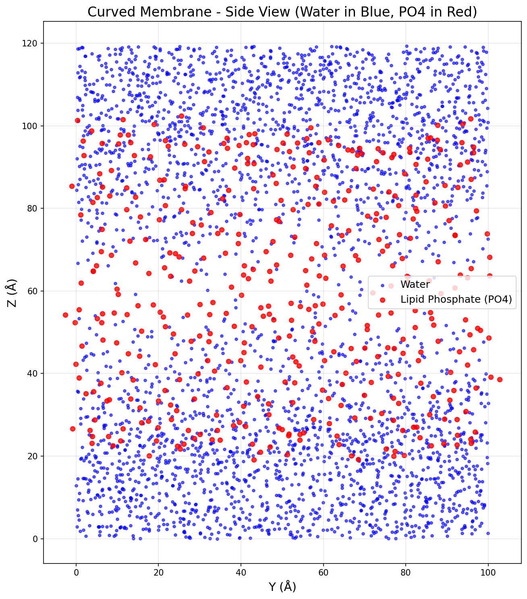
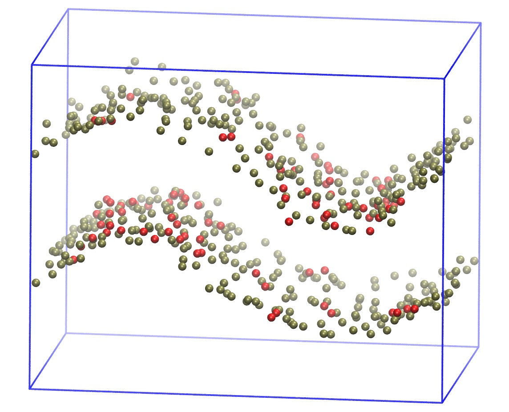
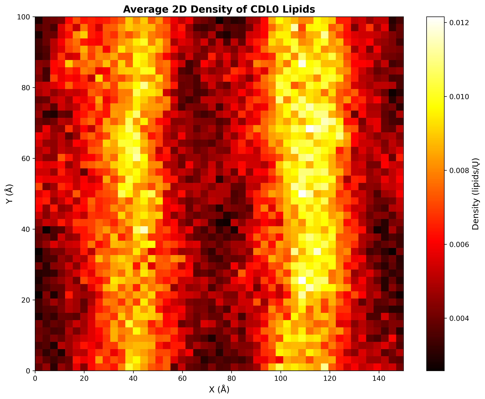
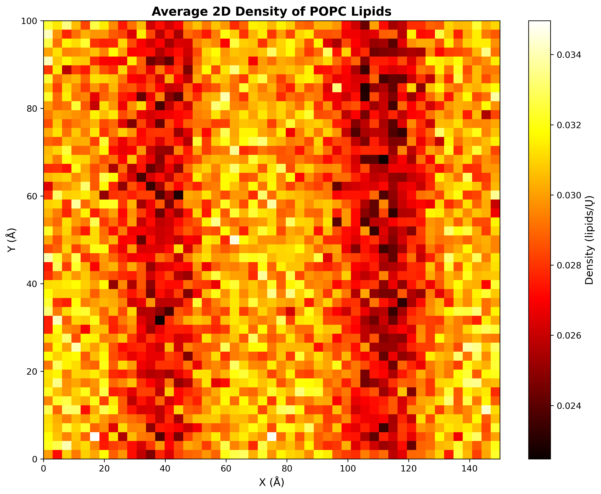
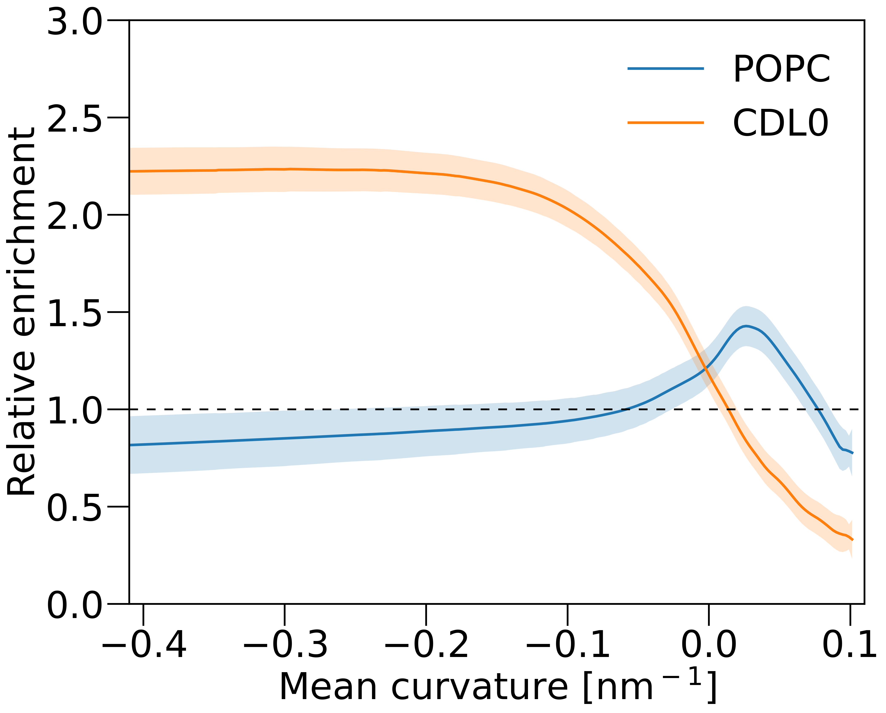
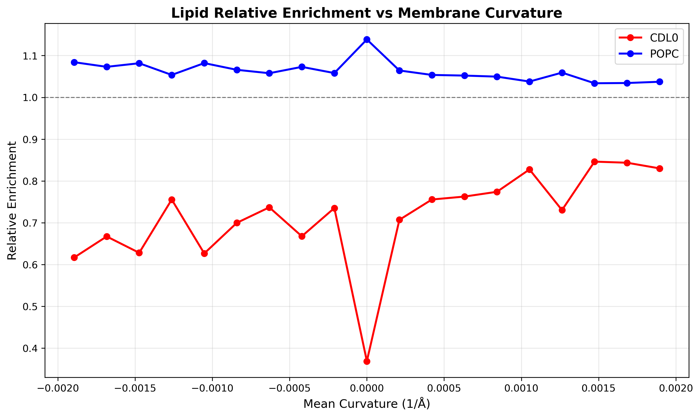

🎯 SciVisAgentBench Evaluation Report
📊 Overall Performance
Overall Score
52.2%
201/385 Points
Test Cases
10/13
Completed Successfully
Avg Vision Score
15.6%
Visualization Quality
38/160
PSNR (Scaled)
N/A
Peak SNR (0/10 valid)
SSIM (Scaled)
N/A
Structural Similarity
LPIPS (Scaled)
N/A
Perceptual Distance
Completion Rate
76.9%
Tasks Completed
ℹ️ About Scaled Metrics
Scaled metrics account for completion rate to enable fair comparison across different evaluation modes. Formula: PSNRscaled = (completed_cases / total_cases) × avg(PSNR), SSIMscaled = (completed_cases / total_cases) × avg(SSIM), LPIPSscaled = 1.0 - (completed_cases / total_cases) × (1.0 - avg(LPIPS)). Cases with infinite PSNR (perfect match) are excluded from the PSNR calculation.
🔧 Configuration
📝 case_1
❌ FAILED0/0 (0.0%)
📋 Task Description
Your agent_mode is "claude_code_claude-sonnet-4-5_exp1", use it when saving results. Your working directory is "/Users/liu42/gitRepo/LC/2026_AgentBenchmark/SciVisAgentBench/SciVisAgentBench-tasks/molecular_vis", and you should have access to it. In the following prompts, we will use relative path with respect to your working path. But remember, when you load or save any file, always stick to absolute path.
1. I want you to visualize a molecular structure from a CIF file.
2. Load the data/1CRN.cif.
3. Visualize the molecular using a licorice representation.
4. Take a screenshot of the visualization.
Q1. Does it show a licorice representation of the protein? (yes/no)
5. Answer Q1 in a plain text file "md_analysis/results/answers_basic_vis.txt".
📝 Text-Based Q&A Evaluation
📊 Detailed Metrics
Text Q&A Score
0/0
0.0%
Input Tokens
476,313
Output Tokens
5,976
Total Tokens
482,289
Total Cost
$1.5186
📝 case_2
10/10 (100.0%)
📋 Task Description
Your agent_mode is "claude_code_claude-sonnet-4-5_exp1", use it when saving results. Your working directory is "/Users/liu42/gitRepo/LC/2026_AgentBenchmark/SciVisAgentBench/SciVisAgentBench-tasks/molecular_vis", and you should have access to it. In the following prompts, we will use relative path with respect to your working path. But remember, when you load or save any file, always stick to absolute path.
1. I want you to visualize a molecular structure from a CIF file.
2. Load the data/1CRN.cif.
3. Visualize the molecular using a CPK or similar representation where atoms are colored by their chemical element.
4. Take a screenshot of the visualization.
Q1. Is the molecule colored according to the chemical element of its atoms (e.g., CPK coloring)? (yes/no)
5. Answer Q1 in a plain text file "md_analysis/results/answers_element_coloring.txt".
📝 Text-Based Q&A Evaluation
📊 Detailed Metrics
Text Q&A Score
10/10
100.0%
Input Tokens
2,026,085
Output Tokens
20,313
Total Tokens
2,046,398
Total Cost
$6.3830
📝 case_3
10/10 (100.0%)
📋 Task Description
Your agent_mode is "claude_code_claude-sonnet-4-5_exp1", use it when saving results. Your working directory is "/Users/liu42/gitRepo/LC/2026_AgentBenchmark/SciVisAgentBench/SciVisAgentBench-tasks/molecular_vis", and you should have access to it. In the following prompts, we will use relative path with respect to your working path. But remember, when you load or save any file, always stick to absolute path.
1. I want you to visualize a molecular structure from a CIF file.
2. Load the data/1CRN.cif.
3. Select all carbon atoms and color them cyan.
4. Take a screenshot of the visualization.
Q1. Are all carbon atoms colored cyan? (yes/no)
5. Answer Q1 in a plain text file "md_analysis/results/answers_selection_coloring.txt".
📝 Text-Based Q&A Evaluation
📊 Detailed Metrics
Text Q&A Score
10/10
100.0%
Input Tokens
968,562
Output Tokens
11,960
Total Tokens
980,522
Total Cost
$3.0851
📝 case_4
10/10 (100.0%)
📋 Task Description
Your agent_mode is "claude_code_claude-sonnet-4-5_exp1", use it when saving results. Your working directory is "/Users/liu42/gitRepo/LC/2026_AgentBenchmark/SciVisAgentBench/SciVisAgentBench-tasks/molecular_vis", and you should have access to it. In the following prompts, we will use relative path with respect to your working path. But remember, when you load or save any file, always stick to absolute path.
1. I want you to visualize a molecular structure from a CIF file.
2. Load the data/1CRN.cif.
3. Color the molecule according to atomic charge: use one color for positive charges, another for negative charges, and a third for neutral atoms.
4. Take a screenshot of the visualization.
Q1. Is the molecule colored by atomic charge (differentiating positive, negative, and neutral)? (yes/no)
5. Answer Q1 in a plain text file "md_analysis/results/answers_charge_coloring.txt".
📝 Text-Based Q&A Evaluation
📊 Detailed Metrics
Text Q&A Score
10/10
100.0%
Input Tokens
1,041,860
Output Tokens
13,831
Total Tokens
1,055,691
Total Cost
$3.3330
📝 case_5
10/10 (100.0%)
📋 Task Description
Your agent_mode is "claude_code_claude-sonnet-4-5_exp1", use it when saving results. Your working directory is "/Users/liu42/gitRepo/LC/2026_AgentBenchmark/SciVisAgentBench/SciVisAgentBench-tasks/molecular_vis", and you should have access to it. In the following prompts, we will use relative path with respect to your working path. But remember, when you load or save any file, always stick to absolute path.
1. I want you to visualize a molecular structure from a CIF file.
2. Load the data/1CRN.cif.
3. Select all oxygen atoms in residues 1 to 20 and color them red.
4. Take a screenshot of the visualization.
Q1. Are all oxygen atoms in residues 1 to 20 colored red? (yes/no)
5. Answer Q1 in a plain text file "md_analysis/results/answers_complex_selection.txt".
📝 Text-Based Q&A Evaluation
📊 Detailed Metrics
Text Q&A Score
10/10
100.0%
Input Tokens
1,484,748
Output Tokens
14,438
Total Tokens
1,499,186
Total Cost
$4.6708
📝 case_6
❌ FAILED0/0 (0.0%)
📋 Task Description
Your agent_mode is "claude_code_claude-sonnet-4-5_exp1", use it when saving results. Your working directory is "/Users/liu42/gitRepo/LC/2026_AgentBenchmark/SciVisAgentBench/SciVisAgentBench-tasks/molecular_vis", and you should have access to it. In the following prompts, we will use relative path with respect to your working path. But remember, when you load or save any file, always stick to absolute path.
1. I want you to visualize a molecular structure from a CIF file.
2. Load the data/1CRN.cif.
3. Select all aromatic residues (PHE, TYR, TRP) and color them purple.
4. Take a screenshot of the visualization.
Q1. Are all aromatic residues (PHE, TYR, TRP) colored purple? (yes/no)
5. Answer Q1 in a plain text file "md_analysis/results/answers_aromatic_selection.txt".
📝 Text-Based Q&A Evaluation
📊 Detailed Metrics
Text Q&A Score
0/0
0.0%
Input Tokens
1,136,579
Output Tokens
14,383
Total Tokens
1,150,962
Total Cost
$3.6255
📝 case_7
20/20 (100.0%)
📋 Task Description
Your agent_mode is "claude_code_claude-sonnet-4-5_exp1", use it when saving results. Your working directory is "/Users/liu42/gitRepo/LC/2026_AgentBenchmark/SciVisAgentBench/SciVisAgentBench-tasks/molecular_vis", and you should have access to it. In the following prompts, we will use relative path with respect to your working path. But remember, when you load or save any file, always stick to absolute path.
1. I want you to perform a structural analysis on a molecular structure from a CIF file.
2. Load the data/1CRN.cif.
3. Calculate the Root Mean Square Deviation (RMSD) of the structure against itself.
4. Calculate the Root Mean Square Fluctuation (RMSF) for the structure.
5. Save the computed RMSD and RMSF values as plain text to "md_analysis/results/answers_rmsd_rmsf.txt".
📝 Text-Based Q&A Evaluation
📊 Detailed Metrics
Text Q&A Score
20/20
100.0%
Input Tokens
331,085
Output Tokens
7,047
Total Tokens
338,132
Total Cost
$1.0990
📝 case_8
10/10 (100.0%)
📋 Task Description
Your agent_mode is "claude_code_claude-sonnet-4-5_exp1", use it when saving results. Your working directory is "/Users/liu42/gitRepo/LC/2026_AgentBenchmark/SciVisAgentBench/SciVisAgentBench-tasks/molecular_vis", and you should have access to it. In the following prompts, we will use relative path with respect to your working path. But remember, when you load or save any file, always stick to absolute path.
1. I want you to calculate the compactness of a protein from a CIF file.
2. Load the data/1CRN.cif.
3. Calculate the Radius of Gyration (Rg) of the protein structure.
4. Save the calculated Radius of Gyration as plain text to "md_analysis/results/answers_rg.txt".
📝 Text-Based Q&A Evaluation
📊 Detailed Metrics
Text Q&A Score
10/10
100.0%
Input Tokens
213,614
Output Tokens
3,431
Total Tokens
217,045
Total Cost
$0.6923
📝 case_9
20/20 (100.0%)
📋 Task Description
Your agent_mode is "claude_code_claude-sonnet-4-5_exp1", use it when saving results. Your working directory is "/Users/liu42/gitRepo/LC/2026_AgentBenchmark/SciVisAgentBench/SciVisAgentBench-tasks/molecular_vis", and you should have access to it. In the following prompts, we will use relative path with respect to your working path. But remember, when you load or save any file, always stick to absolute path.
1. I want you to calculate specific geometric properties of a molecular structure from a CIF file.
2. Load the data/1CRN.cif.
3. Calculate the distance between the alpha carbons of residue 1 and residue 10.
4. Calculate the backbone dihedral angles (phi and psi) for residue 5.
5. Save the computed distance and angles as plain text to "md_analysis/results/answers_distances_angles.txt".
📝 Text-Based Q&A Evaluation
📊 Detailed Metrics
Text Q&A Score
20/20
100.0%
Input Tokens
211,904
Output Tokens
3,510
Total Tokens
215,414
Total Cost
$0.6884
📝 case_10
10/10 (100.0%)
📋 Task Description
Your agent_mode is "claude_code_claude-sonnet-4-5_exp1", use it when saving results. Your working directory is "/Users/liu42/gitRepo/LC/2026_AgentBenchmark/SciVisAgentBench/SciVisAgentBench-tasks/molecular_vis", and you should have access to it. In the following prompts, we will use relative path with respect to your working path. But remember, when you load or save any file, always stick to absolute path.
1. I want you to calculate the number of contacts in a folded protein from a CIF file.
2. Load the data/1CRN.cif.
3. Calculate the number of contacts within an 8 Angstrom cutoff.
4. Save the total count of contacts as plain text to "md_analysis/results/answers_native_contacts.txt".
📝 Text-Based Q&A Evaluation
📊 Detailed Metrics
Text Q&A Score
10/10
100.0%
Input Tokens
189,200
Output Tokens
2,484
Total Tokens
191,684
Total Cost
$0.6049
📝 curved-membrane
⚠️ LOW SCORE21/45 (46.7%)
📋 Task Description
1. Please load the Martini coarse-grained simulation file from "curved-membrane/data/curved-membrane.gro" into VMD.
2. Use VMD to show a zoomed in view of the membrane side coloring the water blue and the lipid phosphate (PO4 beads) red, and take a screenshot.
3. Analyze the visualization and answer the following questions:
Q1: Is there any water that penetrates into the membrane phase? (yes/no)
4. Save your work:
Save the VMD state as "curved-membrane/results/{agent_mode}/curved-membrane.vmd".
Save the screenshot of the visualization as "curved-membrane/results/{agent_mode}/curved-membrane.png".
Save the answers to the analysis questions in plain text as "curved-membrane/results/{agent_mode}/answers.txt".
🖼️ Visualization Comparison
Ground Truth

Agent Result

📏 Vision Evaluation Rubrics
📝 Text-Based Q&A Evaluation
📊 Detailed Metrics
Visualization Quality
3/20
Output Generation
5/5
Efficiency
3/10
Text Q&A Score
10/10
100.0%
Input Tokens
999,759
Output Tokens
11,892
Total Tokens
1,011,651
Total Cost
$3.1777
📝 ras-raf-membrane
❌ FAILED0/65 (0.0%)
📋 Task Description
1. Please load the Martini coarse-grained simulation file from "ras-raf-membrane/data/ras-raf-membrane.gro" into VMD. The simulations has a membrane and a RAS-RAF protein complex.
2. Use VMD to show a zoomed in side view of the membrane and center on the protein with the protein below the membrane.
For the bilayer only show the PO4 lipids beads and ROH cholesterol bead and color them gray.
Also show the protein back bone beads coloring RAS (resid 2 to 187) red and RAF (resid 188 to 329) blue.
Take a screenshot of the visualization.
3. Analyze the visualization and answer the following questions:
Q1: Are there any cholesterol head groups in the bilayer center? (yes/no)
Q2: How many lipids are there within 1.5 nm of the RAF protein?
A. 0
B. 0-3
C. 3-5
D. >5
4. Save your work:
Save the VMD state as "ras-raf-membrane/results/{agent_mode}/ras-raf-membrane.vmd".
Save the screenshot of the visualization as "ras-raf-membrane/results/{agent_mode}/ras-raf-membrane.png".
Save the answers to the analysis questions in plain text as "ras-raf-membrane/results/{agent_mode}/answers.txt".
🖼️ Visualization Comparison
Ground Truth

Image not available
📏 Vision Evaluation Rubrics
📝 Text-Based Q&A Evaluation
📊 Detailed Metrics
Visualization Quality
0/30
Output Generation
5/5
Efficiency
3/10
Text Q&A Score
10/20
50.0%
Input Tokens
730,915
Output Tokens
11,913
Total Tokens
742,828
Total Cost
$2.3714
📝 trajectory-inspection
⚠️ LOW SCORE80/175 (45.7%)
📋 Task Description
1. Please load the Martini coarse-grained membrane simulation from
"trajectory-inspection/data/trajectory-inspection.gro" into VMD.
2. Load the trajectory file
"trajectory-inspection/data/trajectory-inspection_3to5us.xtc".
3. Render a titled side view of the membrane using the last frame of the trajectory.
- Show the PO4 beads of POPC lipids in light brown.
- Show the PO4 beads of CDL0 lipids in red.
- Display the simulation box in blue.
Save the rendered image as:
"trajectory-inspection/results/{agent_mode}/membrane-curved-tilted-side-5us.jpg"
4. Perform curvature-based lipid distribution analysis for all the frames in the trajectory and generate the following figures:
- A 2D density heatmap of CDL0 lipids across the curved membrane surface.
- A 2D density heatmap of POPC lipids across the curved membrane surface.
- A plot of lipid relative enrichment versus membrane mean curvature for both POPC and CDL0.
Save the generated figures as:
"trajectory-inspection/results/{agent_mode}/avg_2d_dens_CDL0.png"
"trajectory-inspection/results/{agent_mode}/avg_2d_dens_POPC.png"
"trajectory-inspection/results/{agent_mode}/relative_enrichment.png"
5. Analyze the trajectory and answer the following questions:
Q1: Are there more than 3000 frames in the trajectory? (yes/no)
Q2: Is the ratio of POPC lipids to the neutral cardiolipin (CDL0) 8:1? (yes/no)
Q3: Do the CDL0 lipids enrich in the negatively curved membrane regions? (yes/no)
Q4: Does the total lipid density change significantly with membrane mean curvature? (yes/no)
Q5: Do the POPC lipids enrich in the negatively curved membrane regions? (yes/no)
6. Save the answers to the analysis questions in plain text as
"trajectory-inspection/results/{agent_mode}/answers.txt".
🖼️ Visualization Comparison - Set 1
Ground Truth

Image not available
📏 Vision Evaluation Rubrics - Set 1
🖼️ Visualization Comparison - Set 2
Ground Truth

Agent Result

📏 Vision Evaluation Rubrics - Set 2
🖼️ Visualization Comparison - Set 3
Ground Truth

Agent Result

📏 Vision Evaluation Rubrics - Set 3
🖼️ Visualization Comparison - Set 4
Ground Truth

Agent Result

📏 Vision Evaluation Rubrics - Set 4
📝 Text-Based Q&A Evaluation
📊 Detailed Metrics
Visualization Quality
35/110
Output Generation
5/5
Efficiency
0/10
Text Q&A Score
40/50
80.0%
Input Tokens
1,756,500
Output Tokens
18,557
Total Tokens
1,775,057
Total Cost
$5.5479